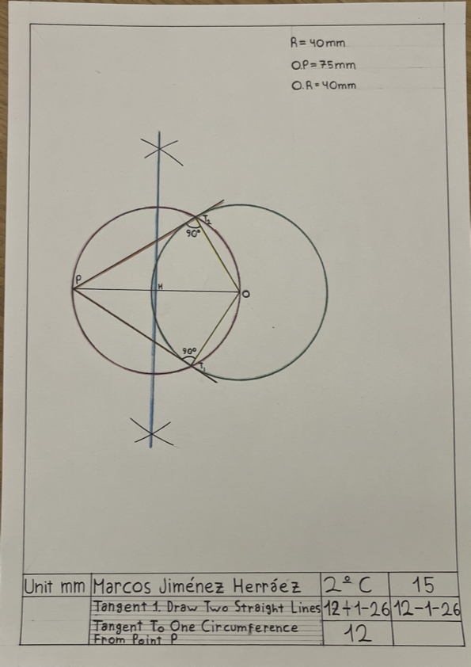

Drawing to straight lines tangent to one circumference from point P.
1. Firstly, I have made the frame.
2. Then, I made a circumference of radius 40mm, whose center was at a distance of 75mm from point P.
3. I made a segment bisector from O to P and got point M.
4. With point M I made a second circumference.
5. I made two lines tangent to P with the first circumference, one made T1 and the other T2, which joined to O, make an angle of 90º each.
In this activity I have learned how to draw to straight lines tangent to one circumference from point P.